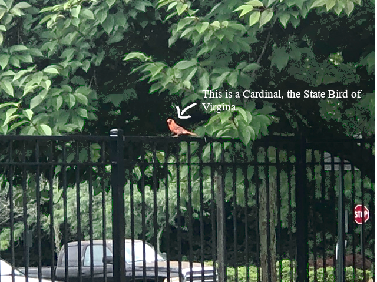
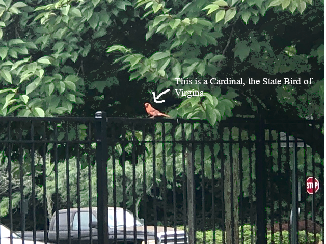
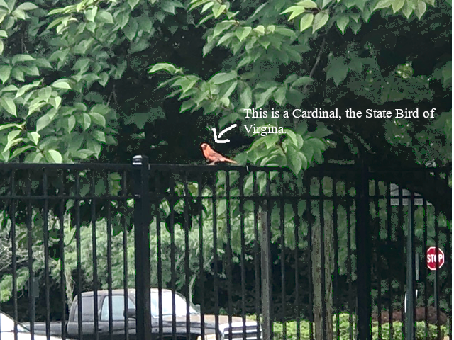

Dear Fairfax County Park Authority,
We would like you to invest the twenty million dollars in the Fairfax County budget toward improving local park and the environment because of the impact our society has made on nature and our planet. If we take action on these global and local issues, we can shape a better world for us and all of life living on planet Earth.
Some examples of these issues are:
Some actions we can take to prevent these events and issues from occuring are reserving more land to for park, animal rehabilition, conservation centers, park/enviornmental maintance, and widening the usage of hybrid and electric vehicles.
Fairfax County should expand the amount of area it has for local parks because it would benefit the wildlife habitat, preserves nature resources, protect and maintain clean air and water in the environment, and provide open space for current and future generations to enjoy. Parks play a critical role in sustaining the health of our environment, supporting healthy ecosystems, and enabling the conservation of natural resources.

The reasons why people should buy hybrid and electric vehicles are because both types of vehicles have their advantages and disadvantages in environmental friendlyness and vehicle preformance. Electric vehicle are great because don't produce any extra emissions when you drive on road, and have an extremely fast acceleration for a civilian vechicle; but some of its drawbacks are that most electric cars only have an average 250 mile range on full battery, it takes a significant amount of time for the battery to charge up to full battery, and that not all people have their own recharge set up or all of the spots at the EV charging station are all filled up. The advantages with hybrid vehicles are that they are a mix of both electric and traditional cars, and that the battery is able to recharge when the car starts braking. Hybrid cars have an average milage of 500 miles on full charge and tank, which is perfect for people who usually drive long distances, while still maintaning some or most of that ecofriendly low car emissions output. The disadvantages with hybrid vehicles are that plug-in hybrids don't have as much electric milage as the non-plug variety, with as little as 16 miles of electric milage. Although both of these options have their ups and down, some of the benefits we've mentions might benefit certain people based on what jobs they have.